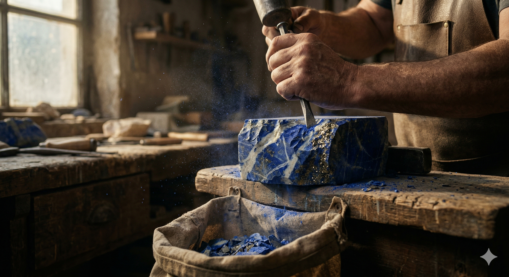
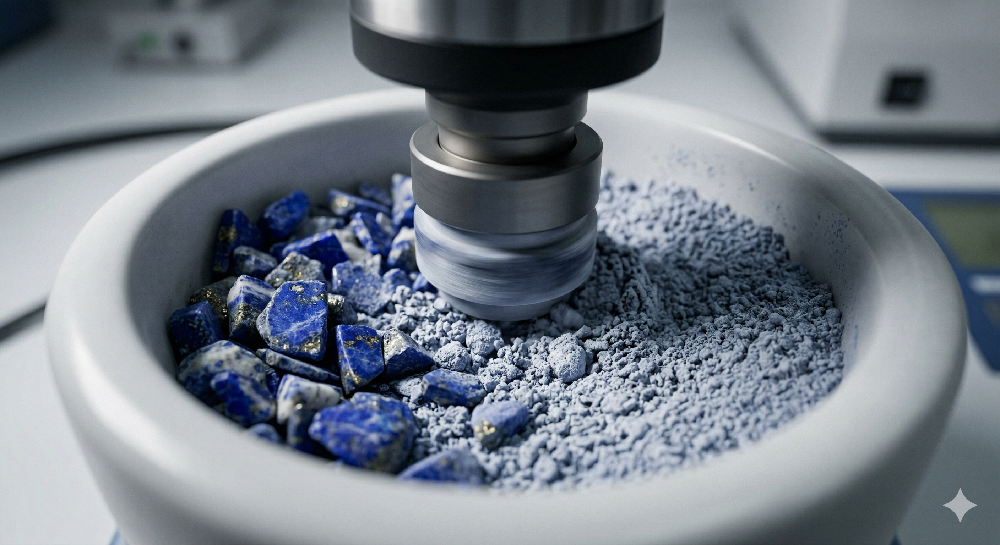
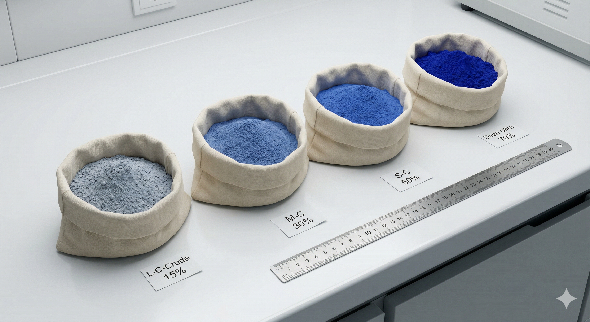
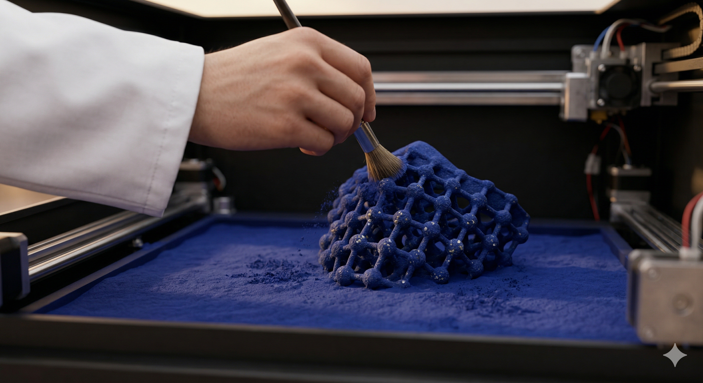

COMPUTACIÓN AVANZADA
Fernanda Cabezas
Diseño industrial
Perfil
Qué hago hoy: Líder Tecnologías Aplicadas Industrial - Transformación Digital Industrial. Lidero y gestiono el programa de manufactura aditiva a nivel corporativo, a través de la colaboración con equipos multifuncionales y los encargados de las plantas, con el objetivo de asegurar la implementación, acelerar la adopción y maximizar el impacto de la tecnología en toda la organización. Ahora tengo interés con el vibe code con IA para generar aplicaciones.
Actualmente me encuentro estudiando en el Magíster de Ciencias del Diseño donde estoy explorando nuevas tecnologías y realización de materias primas para Manufactura Aditiva por medio de biomateriales a través de revalorización de descartes (economía circular).
Qué me gustaría aprender en este curso: programación web, vibe coding, que me sorprenda.
Intereses
- Tecnología 4.0 y 5.0
- Diseño de Material y CAD CAM
- Economía Circular
Una pregunta que me interesa explorar
¿Se puede reutilizar el remanente de lapislázuli descartado por artesanos y minas como materia prima para manufactura aditiva?
Algo que me inspira




Modelo 3D
Muestras impresas de minerales, exportadas desde Rhino.
LAB02 — Campo Generativo 01
Sistema generativo interactivo hecho para Computación Avanzada: torres cuya altura, color e interacción con el cursor están definidas por reglas, no dibujadas a mano. Abrir en pantalla completa →
Ejercicio 02 — Radar de materiales FDM
Comparo hasta 4 filamentos de impresión 3D que uso en mi trabajo, con datos reales de sus fichas técnicas: resistencia tensil, elongación, módulo, flexión, calor, tenacidad y humedad. Abrir en pantalla completa →
Links
Declaración de uso de IA
Este repositorio fue desarrollado con apoyo de Claude (Claude Code), un asistente de inteligencia artificial de Anthropic, usado exclusivamente con fines educativos dentro del curso Computación Avanzada (MCD, UAI), en el marco explícitamente autorizado por el profesor. La IA se usó como copiloto de programación; las decisiones de diseño fueron tomadas por la autora. Detalle completo, con los prompts usados, en AI_USAGE.md.